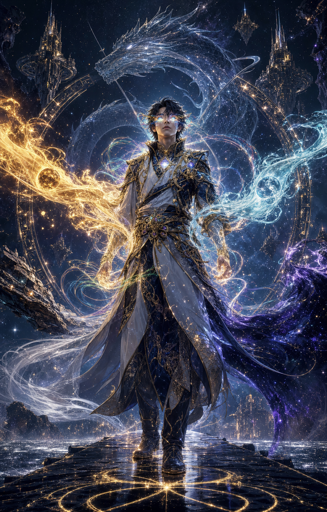

batch-000-01canonstylized-conceptlegacy 8.0gate 24iterateB+
Arcanean Confluence Avatar in full hero state with five elements plus prism synthesis.
Ship status: concept keeper
Recap: Strong mythic clarity and central hero silhouette.
Critic: Good confluence read, but not competition-final. Simplify element orbits and make bending anatomy-led.
Failure modes: Effect density, generic hero-poster polish, needs stronger body mechanics.
Next: Regenerate with one grounded stance, fewer rings, sharper costume construction.